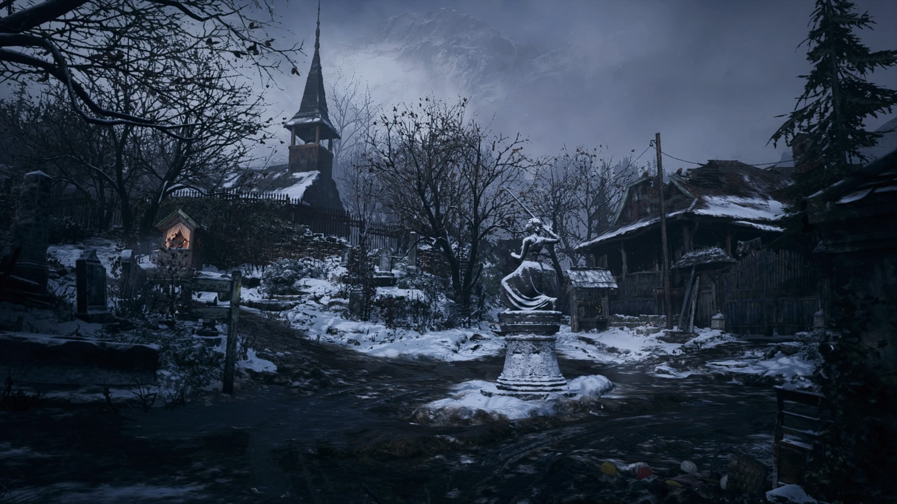
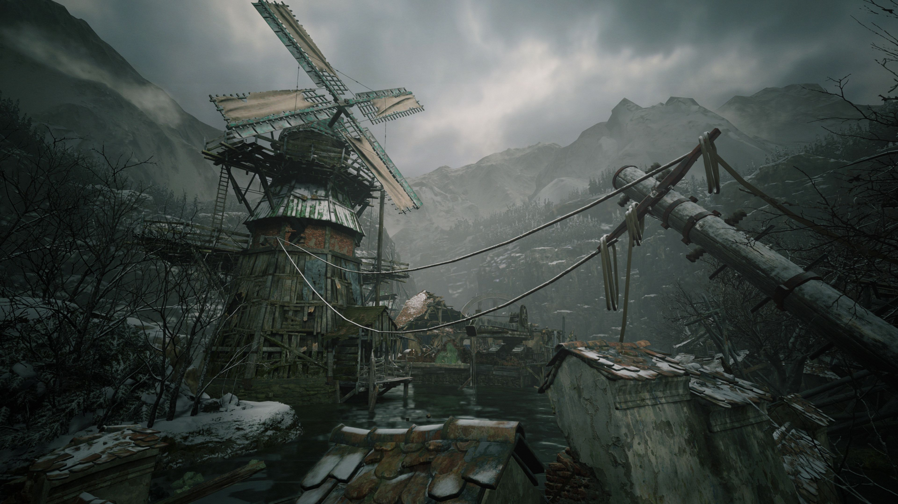
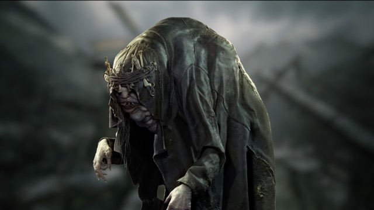

RESIDENT EVIL VILLAGE
1.Historia

Três anos depois de derrotar os Bakers e Eveline em Dulvey, Ethan e Mia Winters foram transferidos à Europa por Chris Redfield, a fim de começarem uma nova vida com sua filha recém-nascida, Rosemary Winters. Em uma determinada noite, Mia é assassinada por Chris Redfield enquanto ele e seu esquadrão Houndwolf invadem a casa, deixando Ethan inconsciente e sequestrando-o junto com sua filha. Ao acordar, Ethan se depara ao lado de um caminhão de transporte capotado, chegando a nas proximidades de uma vila aterrorizada por licanos. Ethan é incapaz de salvar os aldeões restantes, sendo capturado e levado perante a sacerdotisa da aldeia, denominada de Mãe Miranda e os quatro Lordes. Ethan consegue escapar de seus captores e se aventura no castelo de Lady/Alcina Dimitrescu para encontrar Rosemary — com o apoio de um comerciante local conhecido como Duque. Ethan elimina Dimitrescu e suas filhas Bela, Cassandra e Daniela, encontrando um frasco contendo a cabeça de Rosemary em um frasco. O duque explica que Miranda colocou as partes do corpo de Rosemary em quatro frascos diferentes para um ritual especial e que ela pode ser restaurada se Ethan recuperar os outros frascos mantidos pelos senhores restantes. Posteriormente, enquanto luta contra os lordes Beneviento e Moreau por seus frascos, Ethan descobre que o esquadrão Houndwolf também está na vila. Ethan passa no teste do último lorde, Heisenberg, em busca do quarto e último frasco — a qual é convidado para a fábrica do lorde — onde Heisenberg oferece uma proposta para derrotar Miranda juntos. Entretanto, Ethan recusa-se a trabalhar junto com Heisenberg entrando em combate com o lorde. Ethan encontra e confronta Chris sobre a morte de Mia, descobrindo que a "Mia" que Chris matou durante a cutscene inicial, na verdade era Miranda disfarçada de sua esposa. Chris revela que Miranda queria Rosemary para a cerimônia, a fim de trazer sua filha Eva morta no final da Primeira Guerra Mundial, durante a pandemia da gripe espanhola. Chris destrói a fábrica de Heisenberg enquanto Ethan usa um tanque improvisado para derrotar Heisenberg. Miranda confronta Ethan e o mata depois que ela revela seus planos de tomar Rosemary como sua filha. Chris testemunha a morte de Ethan e leva-o para o esquadrão Houndwolf junto com Rosemary. Enquanto a força de assalto BSAA distrai Miranda, entrando em uma caverna abaixo da vila, descobre-se o local do Megamuceto (chamado de "raiz fúngica") — a fonte do molde. Chris planta uma bomba no Megamuceto e prossegue nas cavernas onde encontra o laboratório de Miranda, descobrindo que ela viveu um século desde que entrou em contato com o fungo, sendo a mentora do Oswell E. Spencer, fundador da Umbrella Corporation. Miranda usou o conhecimento coletivo daqueles que o fungo registrou para transformar a vila em seu laboratório pessoal para reviver sua filha, Eva, com os quatro lordes e Eveline, que possuía o DNA de Eva, sendo experimentos fracassados. Ela encontrou compatibilidade em Rosemary, a quem considerou uma Eveline aperfeiçoada devido às suas habilidades especiais herdadas de Ethan e Mia. Chris também resgata a prisioneira Mia, descobrindo que Ethan ainda está vivo quando Mia revela seus poderes. Ethan revive após encontrar Eveline no limbo, revelando que ele foi morto em seu primeiro encontro com Jack Baker em Dulvey, mas foi revivido pelo molde que lhe deu poderes regenerativos. O Duque leva Ethan ao local do ritual onde Miranda está tentando reviver Eva, mas só consegue reviver Rosemary. Miranda enfurecida batalha com Ethan, que a mata, antes que o Megamuceto surja do chão. Ethan, com o corpo se deteriorando por ter atingido seu limite, se sacrifica para detonar a bomba que Chris plantou no fungo, visando dar-lhes tempo da esquadrão fugir para um local seguro. Enquanto Mia lamenta a perda de Ethan, Chris descobre que os soldados da BSAA enviados para a vila eram armas biológicas orgânicas, ordenando que seu esquadrão se dirija ao quartel-general europeu da BSAA para obter respostas. Em uma cena pós-crédito, a adolescente Rosemary visita o túmulo de Ethan antes de ser chamada para uma missão em nome de uma organização não revelada. Enquanto ela e sua escolta se afastam, uma figura desconhecida é vista se aproximando de seu veículo.
2.Locais
- Casa do Ethan
- Vilarejo
- Castelo Dimitrescu
- Casa Beneviento
- Os Moinhos
- A Fabrica
No local que se inicia a historia, onde Ethan, Mia e sua filha Rose descansam.

Local onde Ethan passa a maior parte do tempo procurando pistas para achar sua filha.

Local que Ethan encontra o primeiro Lorde, a Lady Dimitrescu, onde ele consegue o primeiro frasco de sua filha.

local onde Ethan encontra o segundo Lorde, onde sofreu alucinações devido a Donna Beneviento.

local onde Ethan encontra o terceiro Lorde, o Moreau, o rejeitado pela Mãe Miranda.

local onde Ethan encontra o quarto e ultimo Lorde, o Heisenberg.

3.Personagens
- Ethan Winters
- Rosemary Winters
- Mia Winters
- Chris
- Duque
- Lady Dimitrecu
- Bela, Cassandra e Daniela
- Donna Beneviento
- Moreau
- Heisenberg
- Mãe Miranda
Personagem principal que você comanda no jogo.

Filha do Ethan e da Mia, em que é procurada por ele durante o jogo.

Esposa do Ethan, que é aprisionada pela Mae Miranda na sela.

Um soldado que ajuda Ethan ao longo da Historia.

Comerciante que ajuda o Ethan ao longo da historia, o fornecendo itens e dicas.

Uma das principais viãs do jogo e a primeira Lorde escolhida pela Mãe Miranda.


As tres fihas da Lady Dimitrescu, que protegem o castelo.

Uma Freira amaldiçoada que controla uma boneca assasina, sendo o segundo Lorde.

Um corcunda assustador dono do vilarejo de moinhos, sendo o terceiro lorde.


Dono de uma fabrica e possui poderes magneticos, sendo o ultimo Lorde e o mais forte deles.


Boss Final e criadora dos Lordes, a Mãe Miranda é a mãe de todos e dona do vilarejo, sendo ela a responsavel por se passar por Mia e sequestrar a Rose.

4.Musica
Musica final do jogo: